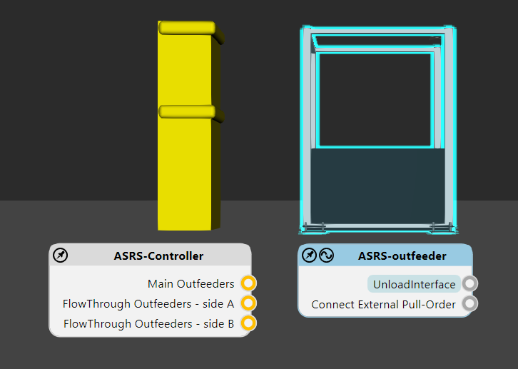
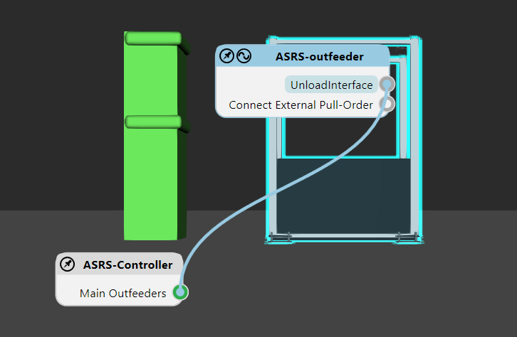
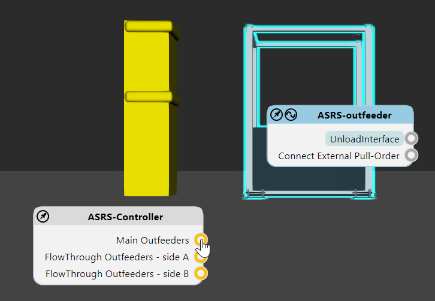
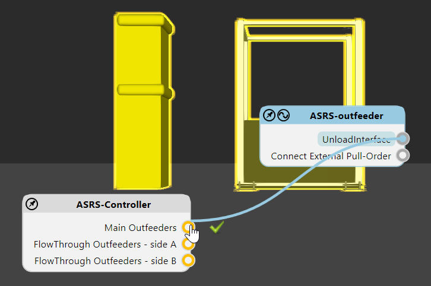
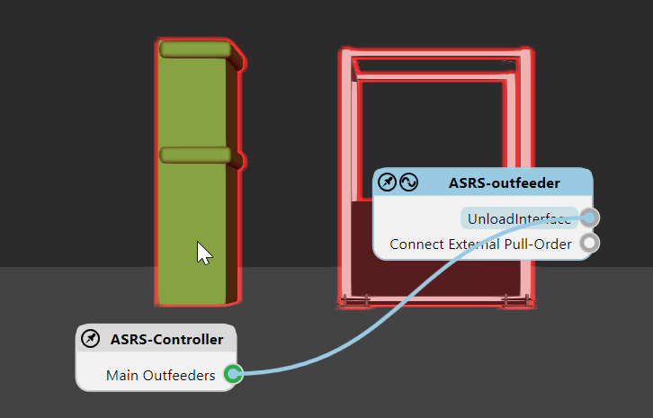
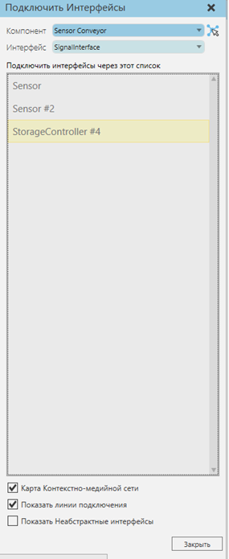
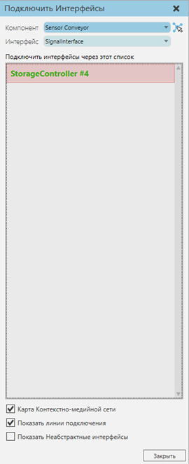

Команда Соединить Интерфейсы позволяет удаленно подключать компоненты с абстрактными интерфейсами. Отображение доступных интерфейсов и их соединения основаны на выбранном компоненте в трехмерном мире.

Редактор интерфейсов
Вы можете подключать интерфейсы с помощью редакторов в 3D-мире. Редактор выбранного компонента выделен, тогда как редактор другого компонента с совместимыми интерфейсами либо виден, либо свернут в виде кнопки развертывания.
Подсказка: Расположение редактора автоматически подстраивается под ваш вид. У вас есть возможность закрепить редактор, чтобы зафиксировать его местоположение в окне просмотра нажав на изображение кнопки в левом верхнем углу.
Интерфейс компонента отображается в его редакторе вместе с точкой подключения. Если вы выберете интерфейс, другие компоненты в трехмерном мире будут выделены желтым цветом, что указывает на доступное соединение. Точка подключения совместимого интерфейса также будет выделена желтым цветом.

Подключенный компонент выделяется зеленым, как и точка подключения подключенного интерфейса. У вас также есть возможность используя пиктограму провода в редакторе выбранного компонента, показывать или прятать соединение между двумя интерфейсами в виде провода.

Примечание: По умолчанию редакторы интерфейсов для компонентов не отображаются, если у них нет другого совпадающего интерфейса с выбранными. Вы можете изменить это, отредактировав «interfacesNodeVisibilityThreshold» в файле app.config.

Задачи
Чтобы добавить соединение, выполните одно из следующих действий:
·Щелкните на точку соединения или компонент доступного соединения. Если вы щелкнули компонент и существует два или более совместимых интерфейса, для соединения будет автоматически выбран лучший вариант.

·Перетащите точку соединения интерфейса, чтобы отобразить провод, а затем перетащите провод на точку соединения или компонент доступного соединения. Если вы перетащите провод на компонент и существует два или более совместимых интерфейса, для соединения будет автоматически выбран лучший вариант.

Чтобы удалить соединение, выполните одно из следующих действий:
·Нажмите на его провод.

·В редакторе выбранного компонента выберите интерфейс, а затем щелкните на точку соединения подключенного компонента.

·В редакторе выбранного компонента выберите интерфейс, а затем щелкните на подключенный компонент. Это приведет к удалению всех связей с этим компонентом.

Панель Задач
Вы можете подключить интерфейсы с помощью панели задач Подключенить интерфейсы.
Свойства
Компонент позволяет выбрать компонент в трехмерном мире, имеющий хотя бы один абстрактный интерфейс.
Интерфейс позволяет выбрать, какой интерфейс в выбранном компоненте соединить с другими интерфейсами.
Доступные соединения с выбранным интерфейсом перечислены в панели задач. Каждое доступное соединение обозначается именем интерфейса. Отключенный интерфейс выделен серым цветом, тогда как подключенный интерфейс окрашен в зеленый цвет..
Карта Контекстно-медийной сети позволяет показывать/скрывать все редакторы интерфейса в 3D мире.
Показать линии подключения позволяет показывать/скрывать все провода подключенных интерфейсов в 3D мире.
Показать неабстрактные интерфейсы позволяет показывать/скрывать интерфейсы, которые не являются абстрактными, например, интерфейс, поддерживающий Plug & Play. Обычно это используется для проверки физических соединений компонента, имеющего несколько интерфейсов. Другой случай - когда вы хотите виртуализировать интерфейс для поддержки удаленного подключения. Например, интерфейс без физического расположения, который не является абстрактным, может быть подключен к совместимому интерфейсу, который является абстрактным. В этом случае неабстрактный интерфейс преобразуется в абстрактный во время подключения.
Задачи
Чтобы добавить соединение:
·Выберите доступное соединение.

Чтобы удалить соединение:
·Нажмите на соединение.
